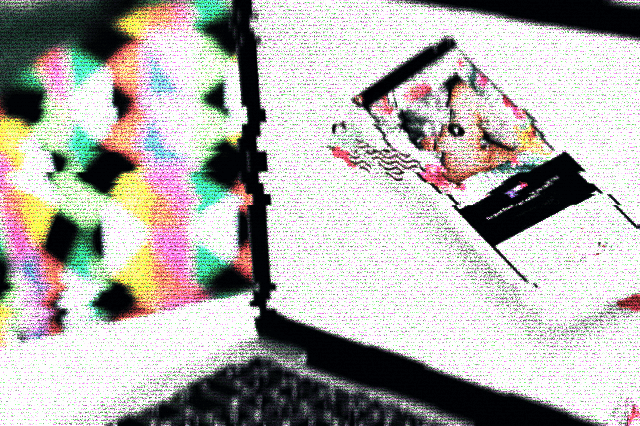

⭐ Clave
En esta etapa nos proponemos diseñar la apariencia del material, otorgándole una interfaz funcional y placentera.
En esta etapa nos proponemos diseñar la apariencia del material, otorgándole una interfaz funcional y placentera.
Habiendo determinado los objetivos, organizado los contenidos y establecido las acciones que sucederán en nuestro material, llega el momento de poner manos a la obra.
En este punto diseñaremos la interfaz que permitirá a quien interactúe con el material hacer lo que le proponemos de forma clara, rápida y accesible.
Compartimos una serie de consejos y buenas prácticas para tener en cuenta en esta etapa:
Asegurar que el material sea fácil de navegar, intuitivamente. Para ello se recomienda:
- Ubicar los elementos más importantes en lugares de fácil acceso.
- Usar títulos/etiquetas legibles y sencillos
- Destacar los enlaces/elementos interactivos de manera que no se pasen por alto
- Evitar elementos, pasos, pantallas o clics innecesarios.
Hay contenidos que se prestan mejor a determinados formatos. Evaluemos nuestros temas y pensemos qué formatos hipermediales pueden beneficiarlo.

Procurar lograr nuestro objetivo con la menor cantidad/variedad de elementos posibles.
Testear el material en diferentes tipos de dispositivos o pantallas para asegurarse que todo el material sea navegable.

Tener presentes algunos principios de diseño básicos:
Accesibilidad: usar colores que no cansen la vista, tipografías legibles.
Contraste: crear una jerarquía visual, que permita distinguir claramente los elementos
Proximidad: facilita a los usuarios asociar componentes relacionados, alentándolos a hacer clic o tocar el elemento correcto.
Alineación: hace que las interfaces se vean más ordenadas y organizadas. Úselo para guiar la vista de los usuarios hacia los elementos principales.
Simetría: crea una sensación de equilibrio y orden, lo que hace que sea mucho más fácil para los usuarios navegar por la interfaz.
Comentarios: especificar comentarios e instrucciones adicionales sobre las secciones o acciones posibles del material puede ayudar a animar a interactuar
Asequibilidad: el principio de diseño que describe cómo se puede utilizar el objeto. Define la relación entre el usuario y el objeto.
Mapeo: este principio de diseño de UI se refiere a cómo los usuarios asocian ciertas acciones con elementos específicos en la pantalla y viceversa. Por ejemplo, las personas a menudo esperan que la imagen de un sobre esté asociada con el correo electrónico y un ícono de lupa para representar una búsqueda.
En esta etapa es importante estar abiertos a posibles cambios, ya que más allá de lo funcional de la interfaz, es interesante sopesar los aportes que lo estético pueda brindar al contenido o a la interacción. Tengamos en cuenta que en cualquier etapa podemos volver a revisar las decisiones anteriores y aprovechar las oportunidades que nos brinda el descubrir cosas en el camino. Esto le dará mayor sentido de unidad y causará mayor placer en el uso del material, algo que no se logra simplemente aplicando a rajatabla los requisitos funcionales y didácticos planteados con anterioridad. Lo importante es lograr que navegar el contenido sea una experiencia accesible, funcional y placentera.
Compartimos algunas notas interesantes sobre esta etapa surgidas en la elaboración de los prototipos, especial atención al caso de Metodología:
Para el diseño del material nos propusimos generar una interfaz luminosa con mucho aire, que diera la sensación de calma y creatividad (situación ideal para responder a las consignas que se presentan en el material). Conversamos sobre el diseño de un material de referencia: el cuadernillo de Las Olas, el Gato y la Caja (2022).
El objetivo sin dudas era diseñar un espacio de “retiro espiritual virtual”, una interfaz que transmita calma, propicie la reflexión, la creatividad y genere el deseo de regresar (o tener el material a mano) para inspirarse en la preparación de las clases.
Con este norte en un primer momento trabajamos el concepto de cuaderno de bocetos y notas de acuarelas (asemejando la planificación de una clase con la producción de una obra de arte).
Pero esta estética requería un proceso creativo bastante largo y complejo, y entendimos que debía ser un material que pudiera ser replicable en otras instancias académicas. Buscando alternativas propusimos la metáfora del diario de viajes, que curiosamente resultó coincidir con la etimología de la palabra "metodología" (en griego "odos" está relacionado al camino, la ruta). En esta línea, nos propusimos ilustrar el material con imágenes relacionadas a la temática (en tonos pasteles), lo que le otorgó una experiencia mucho más interesante y coherente que la propuesta en un primer momento.
La búsqueda estética en esta etapa puede dar lugar a la serendipia.
Para la presentación visual nos proponemos acompañar los contenidos de la materia a través de un mismo código visual que nos permita generar una experiencia usuaria entretenida y agradable. Para ello exploramos diferentes recursos abiertos y gratuitos que sean fáciles de utilizar. De este modo, en lugar de utilizar imágenes o videos para presentar ejemplos o casos, seleccionaremos imágenes, colores, tipografías, entre otros elementos. 
IMÁGENES
Seleccionar  imágenes de  oficinas, reuniones, salas de informática, equipos de trabajo, etc.
Unsplash
Wellcome collection
FindA
VIDEOS
Youtube
ELEMENTOS GRÁFICOS
Freepik
Envato
TIPOGRAFÍAS
Dafonts
Google fonts
PALETA DE COLORES
Coolors
Para cerrar esta etapa, debemos tener una primera versión del material que se sienta bien y permita cumplir los objetivos propuestos en la etapa 1.
Obra publicada con Licencia Creative Commons Reconocimiento Compartir igual 4.0